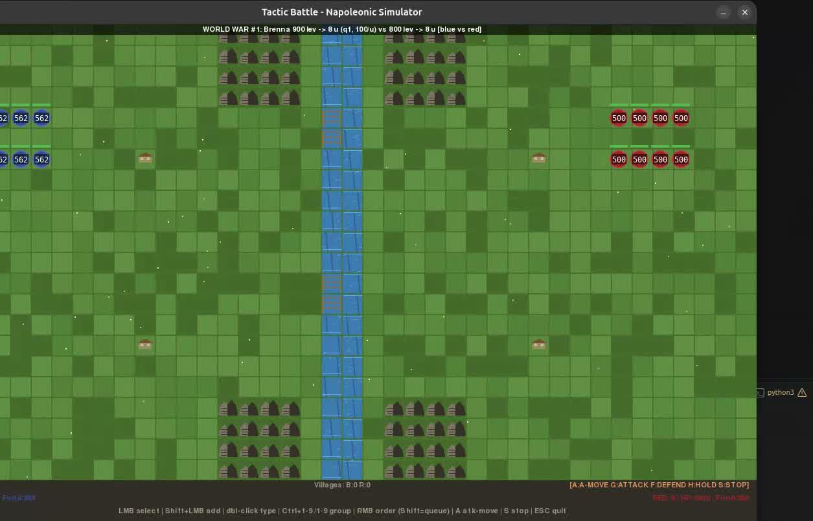
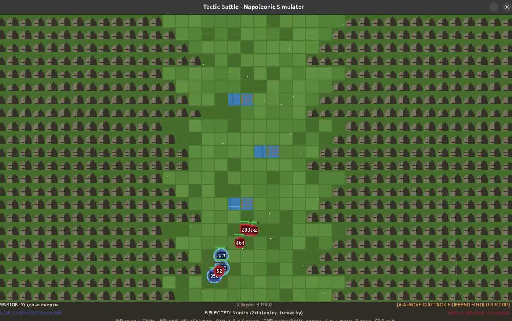

Tactical Combat
3 unit types (Infantry, Cavalry, Archers) with a type-advantage matrix, soldier counts, combat range and collision.
A top-down 2D RTS with A* pathfinding, type-advantage combat, village capture, a world-map strategy layer with diplomacy, and a modular AI you can swap for an ML agent.
Everything you see runs locally. No cloud, no API keys.
3 unit types (Infantry, Cavalry, Archers) with a type-advantage matrix, soldier counts, combat range and collision.
Capture villages for food income, recruit free infantry every 3 minutes, supply capped at 1000.
Terrain-aware routing around mountains and rivers, with bridge crossings and diagonal moves.
3 nations, 50 irregular provinces, 6 generals, diplomacy (War/Neutral/Friendly/Alliance), AI opponents.
State machine with tactical grouping, flanking, hold position, retreat logic and village capture.
GUI via X11 forwarding or headless mode for CI and testing on any platform.
4 handcrafted missions with unique terrain and objectives.
Defend or assault a strategic bridge crossing over a river with mountain flanks.
Navigate a narrow mountain canyon with chokepoints.
Assault an enemy fortress behind river and mountain defenses.
Capture and hold 6 villages to build an economic advantage.
RTS-style keyboard and mouse.
Left click select, Shift+click add, drag box, double click same type, Ctrl+A all.
Right click move/attack. Keys: A attack-move, G focus, H hold, F defend, S stop.
Ctrl+1..9 assign control group, 1..9 recall, Ctrl+0 forget all.
Left click select/move general, Space end turn, Tab diplomacy, WASD scroll.
Space toggle ranges, R restart, N next mission, Esc deselect/quit.
Each village gives 20 food/sec, each unit costs 5 food/sec, cap 1000.
MVC separation: config, map, units, AI, engine, pathfinding are independent modules.
config.py constants, enums, colors, unit stats, combat matrix
map.py TacticalMap: tile grid, terrain, villages
pathfinding.py A* with terrain cost weighting
units.py Unit: collision, pathfinder, combat
ai.py UnitAI + AIController (FSM + Minimax target selection)
minimax.py Minimax + Alpha-Beta (Week 4)
engine.py game loop, multi-select, food, villages, HUD
main.py / menu entry point, menus, campaign select
campaigns.py 4 mission definitions
world_data.py 50 provinces, 3 nations, rivers, graph
world_map.py polygon rendering, movement, auto-capture/battle
diplomacy.py WAR/NEUTRAL/FRIENDLY/ALLIANCEDrop PNG files into docs/screenshots/ and they will appear here.

Tactical battle

Combat engagement

Village capture

World map

AI movement

Main menu
Three unit types with a type-advantage matrix.
Type HP Speed Damage Range Advantage
Infantry 500 1.8 8 1.2 balanced
Cavalry 350 3.2 14 1.4 beats Archers (1.5x)
Archer 280 1.5 6 5.0 fires from rangeHow each syllabus topic is implemented in code.
Grid-based A* with terrain cost weighting, diagonal moves, mountain avoidance and bridge crossings. Respects unit collision via push-apart.
States: Idle, Group Up, Move, Hold, Attack, Flank, Capture, Retreat. Infantry groups before attacking, cavalry flanks, archers hold position.
Adversarial target selection: AI assumes enemy picks best counter-attack. Alpha-Beta prunes branches where beta <= alpha.
Move a unit onto a village to capture. AI prioritizes neutral/enemy villages for economic advantage.
Units flee below 35% health with a finite allowance, then re-engage. Prevents permanent fleeing and endless battles.
Enemy generals move and attack autonomously each turn. Auto-capture neutrals, auto-battle on enemy territory.
924 tests across unit, integration and edge cases.
TestConfig, TestTacticalMap, TestVillages, TestPathfinding,
TestUnit, TestUnitCollision, TestAI, TestCampaigns,
TestFoodSystem, TestIntegration, TestEdgeCases, TestDiplomacy,
TestWorldData, TestWorldMap, TestImports, TestWorldMapTopology,
TestWorldMapInit, TestMinimax (9)Implemented as real code, not a wrapped API.
Finite-state-machine agent with states Idle / Group Up / Move / Hold / Attack / Flank / Capture / Retreat, reacting to an environment of enemies, allies and villages.
A* pathfinding with terrain cost weighting, diagonal movement, mountain avoidance and bridge crossings.
Minimax with Alpha-Beta pruning selects the best enemy target, assuming the enemy picks the best counter-attack.
git clone https://github.com/Tleukhanov/TacticBatle.git
cd TacticBatle
pip install pygame-ce
python main.pyDocker (headless) available via docker compose --profile headless up --build.
2–3 minute gameplay walkthrough. Recording guide in the repository.
2–3 min gameplay: battles, A* pathfinding, AI combat, village capture, world map.
924 tests passing across unit, integration and edge cases.
python -m pytest -v